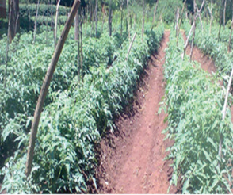
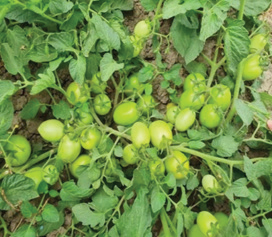
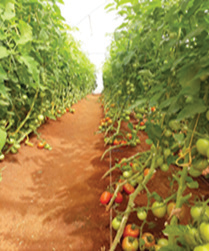
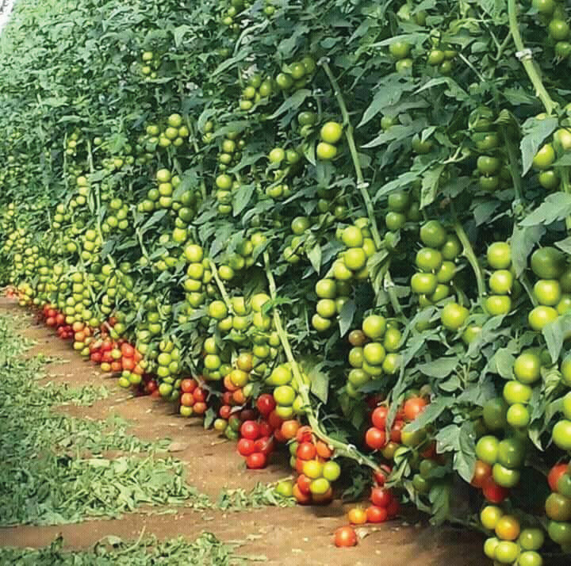

Tomato varieties are grouped based on their growth habit as determinate, semi-determinate, and indeterminate varieties.
(a) Determinate tomatoes: A type of tomato that grows to a certain height and form a more compact bush-like shape. They stop growing taller when they start to produce fruit. Figure 8.2 (a) shows how determinate tomatoes grow.


(b) Indeterminate tomatoes: These tomatoes keep growing and making new leaves and flowers. They need to be supported to grow upright and remove side branches. They are good for screen house farming. Figure 8.2 (b) shows how indeterminate tomatoes grow.


(c) Semi-determinate tomatoes: These tomatoes grow in a way that is between determinate and indeterminate. They live longer than determinate types. The pictures in Figure 8.2 (c) show how semi-determinate tomatoes grow.